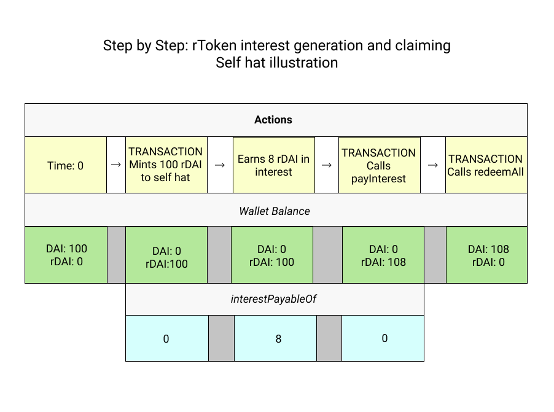
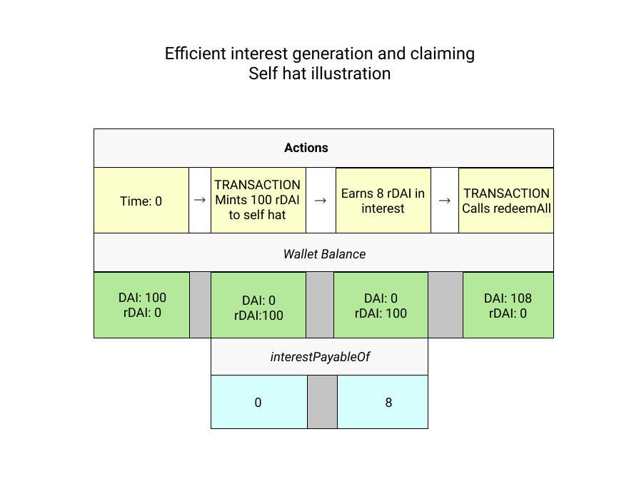

Components
rTokens
rTokens are wrapped versions of their underlying ERC20 assets that earn interest from the specified Allocation Strategy that can be redirected to flow to recipients that the holder of the underlying asset chooses.
The rToken contract keeps track of the total amount of minted rTokens, user balances, and User Buckets.
Deployment
At deployment, an rToken contract must specify the address of the underlying ERC20 asset. To be useful as an rToken, the underlying ERC20 asset should be available to supply on one or more Allocation Strategy platforms to generate interest.
rToken Accounts
Each address has an rToken Account. The account data includes:
userBuckets – an array specifying the amounts of rTokens committed to each active hatID
internal accounting information,
account statistics.
Minting
rTokens are minted and redeemed at a ratio of 1:1 to their underlying asset. So 25 DAI can mint 25 rDAI, which are then redeemable for 25 DAI.
Like other ERC20 wrapper contracts, rToken contracts require holders of the underlying asset to approve the amount of the asset to be used to mint rTokens. This amount can be queried with allowance.
Control Over Interest Streams
The holder of the underlying asset remains in control of where the interest streams flow, but cannot claw back interest that has already been redirected. The holder can stop sending interest to a recipient (or recipients) by: 1) redeeming all the principal for the underlying asset or 2) changing the set of recipients with the changeHat function.
Accounting Construct
rTokens work by recording the amount of the underlying asset that an address mints (the principal) as a fixed debt that must be repaid, and then “lending” out the now interest earning principal to the interest recipients. The recipients can redeem the amount of rTokens that have accrued from interest, but they cannot redeem the debt portion which represents the principal.
Example
Alice mints 1,000 rDAI and designates Bob as the only interest recipient.
At that time Bob has received a loan of 1,000 rDAI and a debt to repay 1,000 rDAI to Alice, meaning a net position of 0 rDAI.
If Bob calls redeemAll() to try to get all the underlying DAI, he will not receive anything because he can only redeem the amount in excess of the debt.
Now fast forward to a time when 75 DAI in interest has accumulated. Bob's “loan” is now worth 1,075 DAI but his debt remains 1,000 DAI, so he can redeem 75 DAI.
Querying and Claiming Interest
rTokens do not automatically increment token balances as interest accrues. Token balances in Ethereum can only be updated through transactions. But there is a way to query the amount of interest that would increment one's rToken balance after a transaction: interestPayableOf.
To understand what is happening with interest and how to claim it, there are two values that should be queried for each address: 1) rToken wallet balance (for minters, equal to the amount of the underlying asset principal, for recipients it will be 0 until a transaction updates the balance) 2) interestPayableOf (the amount of accrued interest that may be claimed by the address)
To illustrate what's going on when, let's look at a simple example where Alice mints 100 rDAI to the self hat (meaning she “redirects” all the interest to herself), earns 8 rDAI in interest and then claims it.

This illustration shows each step, but calling redeemAll also calls payInterest internally, so a more efficient flow would look like this: 
Common write functions:
-
initialize(address underlyingAsset, string memory name_, string memory symbol_, uint256 decimals_) public– set the parameters of an rToken at deployment -
mint(uint256 mintAmount) external nonReentrant returns (bool) -
mintWithSelectedHat(uint256 mintAmount, uint256 hatID) external nonReentrant returns (bool) -
mintWithNewHat(uint256 mintAmount, address[] calldata recipients, uint32[] calldata proportions) external nonReentrant returns (bool) -
redeem(uint256 redeemAmount) external nonReentrant returns (bool) -
redeemAll() external nonReentrant returns (bool) -
transfer(address dst, uint256 amount) external nonReentrant returns (bool) -
transferAll(address dst) external nonReentrant returns (bool) -
payInterest(address ) -
changeHatForBucket(uint256 newHatID, uint32 bucket) external nonReentrant returns (bool) -
changeHatForAllBuckets(uint256 newHatID) external nonReentrant returns (bool)
Common read functions:
-
getHatsByAddress(address owner) external view returns (hats[]) -
getBucketsByAddress(address owner) external view returns (userBuckets[]) -
receivedSavingsOf(address owner) external view returns (uint256 amount) -
receivedLoanOf(address owner) external view returns (uint256 amount) -
interestPayableOf(address owner) external view returns (uint256 amount) -
getUnderlyingAsset() public view returns (address) -
balanceOf(address owner) external view returns (uint256 amount) -
allowance(address owner, address spender) external view returns (uint256)